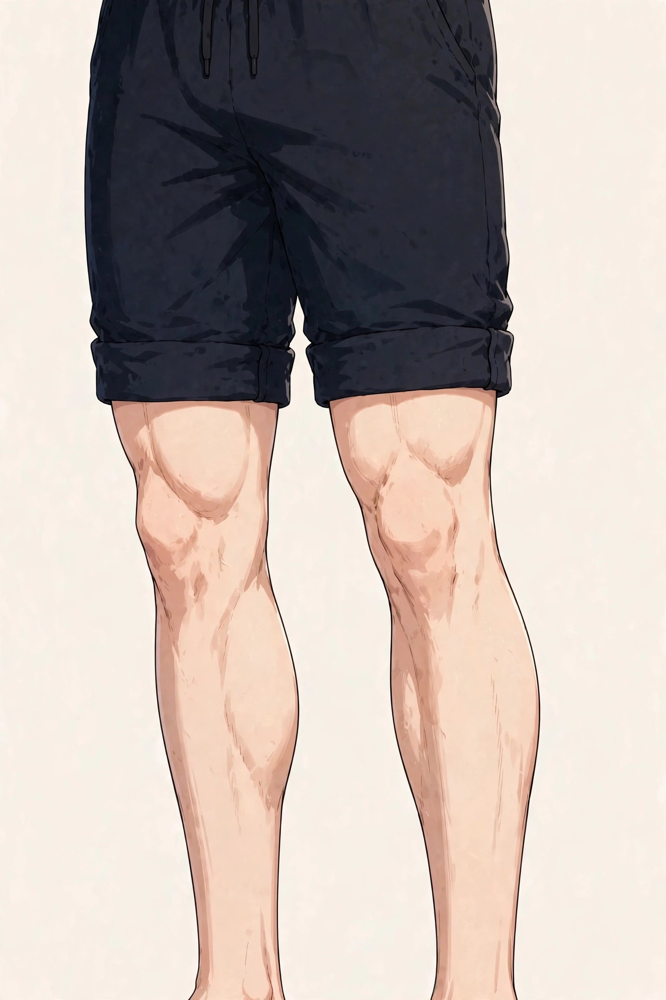

SYMPTOM GUIDE ｜ 東三国・新大阪
ランナー膝（腸脛靭帯炎）でお悩みの方へ東三国・新大阪の男性専用整体院 北辰堂

ランニングの途中から膝の外側が痛み出す、一定の距離を超えると決まって痛む、下り坂で痛みが強い——。ランナー膝（腸脛靭帯炎）は、ランナーに多い膝外側の痛みです。休むと治まるのに、走ると再び出る、という経過が特徴です。
腸脛靭帯は、骨盤から脛骨まで太ももの外側を走る長い靭帯で、膝の曲げ伸ばしのたびに大腿骨の外側の出っ張りと擦れ合います。このページでは、腸脛靭帯の仕組みと要因、ツボ、セルフケア、受診の目安をまとめました。一般的な健康情報としてお読みください。
① ランナー膝（腸脛靭帯炎）とは
腸脛靭帯は、太ももの外側にある大腿筋膜張筋から始まり、膝の外側を通って脛骨の外側（ガーディ結節）に付着する、人体で最も長い靭帯の一つです。膝を曲げ伸ばしすると、靭帯は大腿骨の外側の出っ張り（外側上顆）の前後を移動し、その際の摩擦が繰り返されると、まわりの組織に炎症が起こり、痛みとして感じられます。
痛みが出るのは、膝の角度がおよそ30度前後の範囲とされ、着地のたびにその角度を通過するランニングでは、負担が何千回と繰り返されます。下り坂では膝の屈曲が浅い角度で続くため、痛みが出やすいとされます。一定距離で痛み出すのは、この繰り返しの蓄積のためです。
背景には、大腿筋膜張筋や臀部（中殿筋）の硬さと弱さ、走行フォーム（骨盤の横揺れ、膝の内側への倒れ込み）、走行距離の急な増加、硬い路面や傾斜のあるコースなどが重なります。膝だけの問題として出ていないことが多い症状です。
腸脛靭帯は太ももの外側を縦に走り、膝の外側を越えて脛骨に付着します。膝の曲げ伸ばしで大腿骨の出っ張りと擦れる場所が、痛みの中心です。位置は目安です。
② 要因の整理
ランナー膝の背景には、靭帯そのものの摩擦に加えて、臀部とフォームの問題が重なっています。
- 走行距離・頻度の急な増加：週の走行距離を急に伸ばすと、摩擦の回数が跳ね上がります。大会前の追い込み期に出やすい要因です。
- 大腿筋膜張筋と臀部の硬さ：靭帯を引く大腿筋膜張筋や、中殿筋などの臀部の筋肉が硬い・弱いと、靭帯の張りが強くなり摩擦が増えます。
- 走行フォームの問題：着地で骨盤が横に揺れる、膝が内側へ倒れ込むフォームは、靭帯への負担を増やします。疲労でフォームが崩れる後半に痛みやすい理由です。
- 下り坂と傾斜のあるコース：下りでは膝の浅い角度での負担が続き、片側に傾いた路面では低い側の脚に負担が偏ります。
- 靴と路面の影響：すり減った靴や硬い路面は、着地の衝撃と脚のねじれを増やし、靭帯への負担につながります。
- 脚長差やO脚などの体の特徴：脚の長さの差や脚のアライメントの特徴があると、片側だけに繰り返し痛みが出る場合があります。
③ セルフチェックリスト
痛みの出方と、走り方の状態を振り返るためのチェックです。
- 走り始めて一定の距離で膝の外側が痛み出す
- 下り坂で痛みが強くなる
- 休むと痛みが治まるが、走ると再発する
- 膝の外側を押すと痛む
- 片側の膝だけに痛みが出る
- 走行距離を増やした時期から痛み始めた
- 階段の下りでも膝の外側が痛む
- お尻の外側の筋肉が硬いと言われる
チェックは診断のためのものではありません。膝の外側の痛みには、半月板や靭帯の問題など別の背景もあります。痛みが続く場合は⑧の受診の目安を確認してください。
④ 東洋医学から見た考え方とツボ
東洋医学では、脚の外側を足少陽胆経が巡り、ランニングによる膝外側の痛みは「経絡の巡りの滞りと、筋の疲労」と捉える考え方があります。風市・陽陵泉は胆経の代表的なツボです。
北辰堂では鍼灸施術は行いませんが、ツボの考え方は、太ももの外側と臀部の状態を確認する施術の組み立てと、セルフケアの案内に活かしています。
風市は太ももの外側の中央、陽陵泉は膝の外側下方の骨の出っ張りの下、足三里はすねの外側上方にあります。位置は目安です。
ツボ：風市（ふうし）
位置：太ももの外側の中央で、気をつけの姿勢で中指の先が当たるあたりにあります。大腿筋膜張筋から腸脛靭帯の張りに関係するツボです。
押し方：手のひらや拳で、太ももの外側をゆっくりほぐすように圧を加えます。靭帯そのものより、筋肉側をほぐす意識で行います。
ツボ：陽陵泉（ようりょうせん）
位置：膝の外側の下方、腓骨の頭の下のくぼみにあります。筋や腱の働きと関係するとされるツボです。
押し方：指の腹で心地よい強さで押します。膝の外側の張りが気になるときに使います。
ツボ：足三里（あしさんり）
位置：膝のお皿の下から指4本分ほど下、すねの骨の外側にあります。脚全体の疲労と巡りに関係する代表的なツボです。
押し方：親指でゆっくり圧を加えます。ランニング後の脚全体の回復ケアとして使います。
⑤ 整体・リラクゼーションでの施術の考え方
北辰堂の施術では、まず、痛みの出る条件（距離・坂・フォーム）と、膝の外側の圧痛、臀部と太もも外側の硬さを確認し、医療機関での確認を優先すべき様子かを見分けます。そのうえで、大腿筋膜張筋と臀部の筋肉の緊張を緩め、靭帯への張りを減らす方向で施術を組み立てます。
あわせて、片脚立ちでの骨盤の安定性など、走行フォームの土台となる体の使い方も確認します。臀部の筋肉（中殿筋）の働きが弱いと、着地のたびに骨盤が揺れ、靭帯への負担が増えます。施術とあわせて、臀部の運動も案内します。
半月板や靭帯の損傷など、膝の外側の痛みの診断は医療機関の領域です。痛みが続く場合や、腫れ・引っかかりを伴う場合は、施術より先に受診を案内します。当院の役割は、筋肉の緊張と体の使い方に対するケアの補助です。
⑥ セルフケア
セルフケアの狙いは、太もも外側と臀部の硬さをほぐし、走る量を段階に戻すことです。痛みが出る距離まで走り続けることは避けてください。
①太ももの外側に手のひらを当てる ②筋肉をゆっくりほぐすように圧を移動させる ③痛みの強い膝の外側そのものは強く押さない、が基本の流れです。
セルフケア1：太もも外側のほぐし
太ももの外側の筋肉（大腿筋膜張筋から中ほど）を、手のひらやフォームローラーでゆっくりほぐします。膝の外側の骨の出っ張りそのものは、強く押さないでください。
セルフケア2：臀部のストレッチと運動
あぐら様の姿勢で臀部を伸ばすストレッチと、横向きで脚を上げる中殿筋の運動を取り入れます。臀部の働きは、着地の安定に直結します。
セルフケア3：走行量の段階的な調整
痛みの出ない距離・ペースから再開し、週ごとに少しずつ戻します。下り坂の多いコースは、回復の後半まで避けます。
セルフケア4：走行後のアイシング
走った後に膝の外側へ熱感がある場合は冷やします。痛みの記録（距離と痛みの出方）をつけると、負荷の調整がしやすくなります。
⑦ 場面別の注意
- ランニング中：痛みが出始めたら、その日の走行は切り上げます。痛みをこらえて走り続けると、炎症が強まり、回復が長引きます。
- 下り坂の多いコース：回復期は平坦なコースを選びます。下りは膝の浅い角度での負担が続くため、痛みの再発の引き金になりやすい場面です。
- 大会前の練習：距離を伸ばすのは週単位で少しずつにし、痛みの出た週は距離を戻します。靴のすり減りも、フォームの乱れの原因になります。
- デスクワークの後：座りっぱなしの後は臀部と太ももが硬くなっています。走る前のウォームアップで、臀部のストレッチを入れてから走り始めます。
⑧ 受診の目安
- 安静にしても痛みが抜けない、歩行でも痛む
- 膝が腫れている、引っかかりや不安定感がある
- 膝の外側以外の場所（関節の中）にも痛みがある
- しびれや、脚の力の入りにくさを伴う
- 数週間の調整でも再発を繰り返す
- けが（ひねり・転倒）のあとから痛み始めた
膝の外側の痛みには、腸脛靭帯炎のほか、外側半月板の損傷や靭帯の問題など、対応の異なる背景があります。検査を含めた評価は医療機関（整形外科・スポーツ医学）の領域です。再発を繰り返す場合は、フォーム評価を含め受診してください。
⑨ よくある質問
Q. ランナー膝は休めば治りますか？
炎症は休息で落ち着きますが、臀部の硬さやフォーム、走行量の問題が残っていると、再開時に再発しやすくなります。休むことと、硬さをほぐすこと、量を段階に戻すことを組み合わせることが大切です。
Q. サポーターやテーピングは有効ですか？
膝の外側への圧迫を加えるサポーターなどが、補助として使われることがあります。ただし、フォームや筋肉の問題への対応の代わりにはなりません。痛みが続く場合は医療機関で確認してください。
Q. 走りながら治すことはできますか？
痛みの出ない範囲の距離とペースに落として走る方法が取られることはありますが、痛みをこらえて同じ量を続けることは避けるべきです。痛みの記録をつけながら、段階を調整してください。
Q. 整体では何ができますか？
大腿筋膜張筋や臀部の緊張を整え、靭帯への張りを減らす補助的なケアと、着地の安定に関わる体の使い方の確認を行います。半月板など関節内部の問題の治療は当院では行えません。
北辰堂のご案内
北辰堂は、大阪市淀川区東三国二丁目にある整体院です。男性スタッフ1人で運営しているため、男性専用としています。施術歴30年の平賀伸人（鍼灸師・国家資格）が、整体とリラクゼーションを行います。当院では鍼灸施術は行いません。営業は平日・土曜17:00〜22:00、日曜10:00〜22:00の完全予約制です。料金は60分 初回2,000円／2回目以降6,000円、90分 初回3,000円／2回目以降9,000円で、お支払いは現金のみです。プライバシーへの配慮のため、詳しい住所はご予約確定後にLINEでご案内します。
メニュー・料金は料金・メニューページ、施術者については当院についてをご覧ください。
関連するお悩み
ご予約・ご相談はLINEから
東三国・新大阪・淀川区周辺で、ランナー膝の相談先をお探しの方は、LINE公式アカウント（北辰堂）からお気軽にご連絡ください。走行量と痛みの出方をお聞きしたうえで、施術の進め方をご案内します。
LINEで予約する